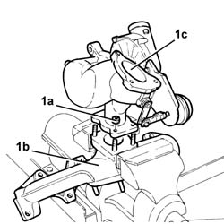

1064A14 TURBO CHARGER - R + R AND REPLACE SEALS WITH EXHAUST MANIFOLD REMOVED
- Path
- Procedures > 10 ENGINE > 1064 ENGINE SUPERCHARGING SYSTEM > 1064A TURBOCHARGER ASSEMBLY > 1064A14 TURBO CHARGER - R + R AND REPLACE SEALS WITH EXHAUST MANIFOLD REMOVED
- Kind
- repair procedure (removal / refitting; the operation number is the code)
- Applies to
- engines: 2.0 16V JTD, 2.2 16V JTD; all production periods
- Interactive page
- https://sloeber94.github.io/elrnDB-fUlss/en/#/179007063
Applies to: engines: 2.2 16V JTD; all production periods
 Removing
Removing
 Refitting
RefittingUndo the fixing nuts (1a) and separate the exhaust manifold (1b) from the turbocharger (1c).

Applies to: engines: 2.0 16V JTD; all production periods
Refitting
RemovingReplace the seal and fit the turbocharger on the exhaust manifold and tighten the fixing nuts to torque.
daNm | Fastening | Component | dia | |
|---|---|---|---|---|
1a | 2.5 | Nut | TURBOCHARGER |
Applies to: engines: 2.0 16V JTD; all production periods
Removing
Refitting1. Undo the fixing nuts (1a) and separate the exhaust manifold (1b) from the turbocharger (1c).
Applies to: engines: 2.0 16V JTD, 2.2 16V JTD; all production periods
Refitting
RemovingReplace the seal and fit the turbocharger on the exhaust manifold and tighten the fixing nuts to torque.
daNm | Fastening | Component | dia | |
|---|---|---|---|---|
1a | 2.5 | Nut | TURBOCHARGER |